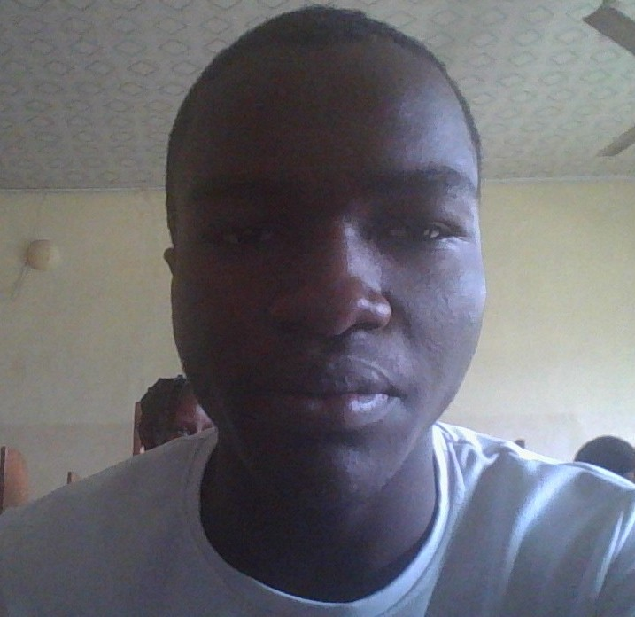

About Me
Hello! I'm Bamanosi Ijeosiese, a passionate web developer with a keen eye for creating engaging and functional digital experiences. My journey into web development began with a fascination for how technology can solve real-world problems and connect people across the globe. I love bringing ideas to life through code!
The world of website development wasn't something I stumbled upon by chance; it was a slow, intriguing pull that began with a simple curiosity and blossomed into a genuine passion. For as long as I can remember, I've been fascinated by how things work, dissecting gadgets (sometimes to their unfortunate demise) and trying to understand the invisible gears turning behind the scenes. This inherent inquisitiveness eventually led me to the digital realm.
My first real encounter with the internet was a revelation. Websites, with their vibrant layouts and interactive elements, seemed like magic. I spent countless hours exploring, not just consuming content, but wondering: How is this made? What are the hidden commands that bring these pixels to life? This burning question was the spark.
My initial foray was, to put it mildly, rudimentary. Armed with a basic HTML tutorial and a notepad, I painstakingly crafted my very first webpage. It was a chaotic mess of bright colors, clashing fonts, and probably more (marquee) tags than any human should ever witness. But there it was – my own little corner of the internet, born from my fingers. The thrill of seeing something I had coded appear on screen, however ugly, was exhilarating. It felt like I had unlocked a secret language, a way to communicate with machines and bring ideas to life.
That initial rush propelled me forward. I devoured every free resource I could find – W3Schools became my second home, online forums my virtual classrooms. I started to understand the power of CSS to breathe style into structure, transforming my jumbled HTML into something that at least attempted to be visually appealing. The journey from static pages to responsive designs, from basic forms to dynamic content, was a steep but incredibly rewarding climb.
There were moments of frustration, of course. Lines of code that refused to cooperate, layouts that stubbornly broke, and countless hours spent debugging a single misplaced semicolon. But with every challenge overcome, my understanding deepened, and my problem-solving skills sharpened. Each successful project, no matter how small, fueled my desire to learn more.
What truly solidified my path was the realization that website development isn't just about lines of code; it's about creation, communication, and problem-solving. It's about taking an abstract idea and transforming it into a tangible, functional experience for others. Whether it's crafting an elegant user interface, optimizing for performance, or building robust backend systems, every aspect presents a unique puzzle to solve.
Today, my journey continues. The landscape of web development is constantly evolving, with new technologies and frameworks emerging at a rapid pace. This constant learning curve is precisely what keeps me engaged and excited. I'm always eager to explore new tools, refine my skills, and push the boundaries of what's possible.
From that first chaotic webpage to the more sophisticated projects I work on now, my journey into website development has been a testament to curiosity, perseverance, and the sheer joy of bringing digital visions to life. It's a journey I'm incredibly proud of, and one I'm excited to continue for many years to come.
My Skills
- HTML5
- CSS3
- JavaScript (ES6+)
- Responsive Design
- Web Accessibility
- Git & GitHub
- Front-end Frameworks (e.g., React concepts)
- Basic Back-end Concepts
- Problem Solving
- Teamwork
- Attention to Detail
- Canva
- Corel draw
- Graphics Design
- Multimedia
- Hardware
- Networking
- Web Hosting
- photshop